← BACK
本章節會告訴你怎麼在初選二時選課
請先登入選課系統、開啟查詢課程網頁
初選二開始可以選修其他課程了，你可以開始規劃、加選你想要修的課。
提示：初選二可以選的課包括
因為會有很多人在先前的選課階段沒選到通識課，所以你如果也沒有選到該類別的通識課，通常仍會建議優先加選通識課程，再考慮選修課程。
例如：前面規劃課表時，我有想要選的跨院跟選修課，但這兩堂課上課時間一樣，此時因為初選一只能選修通識課程，所以先試試看能不能選上該堂跨院，如果選上了就再考慮；如果沒選上，就在初選二時選填選修課。
注意：初選階段只能選上一堂跨院課程、一堂博雅課程，舉例來說：如果初選一已經正式選上了一堂跨院課程，初選二就不能再加選跨院課程。
注意：本階段選課為志願序制，不分類別，每堂課志願序不得重複，依照優先程度填入：1、2、3、...、最多至20（數字越小越優先）。
例如：初選二欲選填以下課程
經過查詢，GEAI1001現在很多人選、很搶手，所以將它擺在第一志願，其他課程依序依照搶手、想選修的程度排列，如下圖所示：
選課過程中，如果想要修改剛才已經加選的課程、修改志願順序，都必須先把已經加選的課程退選（移除），之後再重新操作（加選要選修的課）
假如發現PIS1001比GEAI1001還要搶手，想要把它跟志願序1 - GEAI1001調換，必須先把要調整的課程、志願序退選（移除）
再把它們加選回來

調整完畢後，選課志願序變為下圖
接下來，你可以等待結果，並開始著手準備加退選。